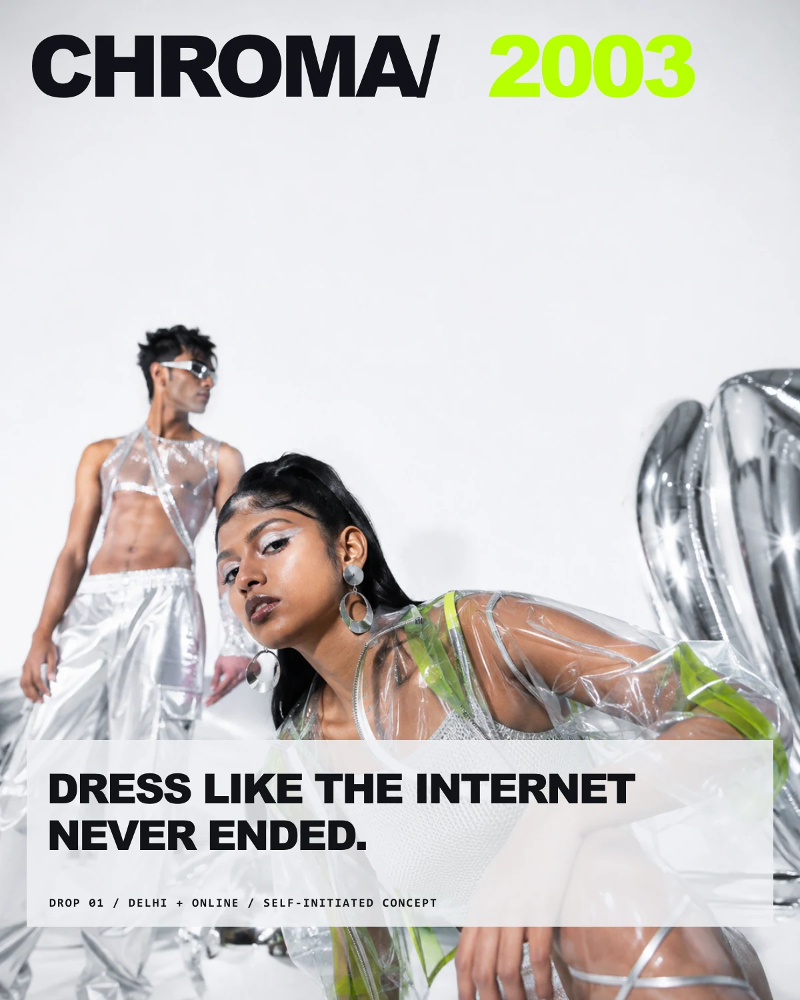
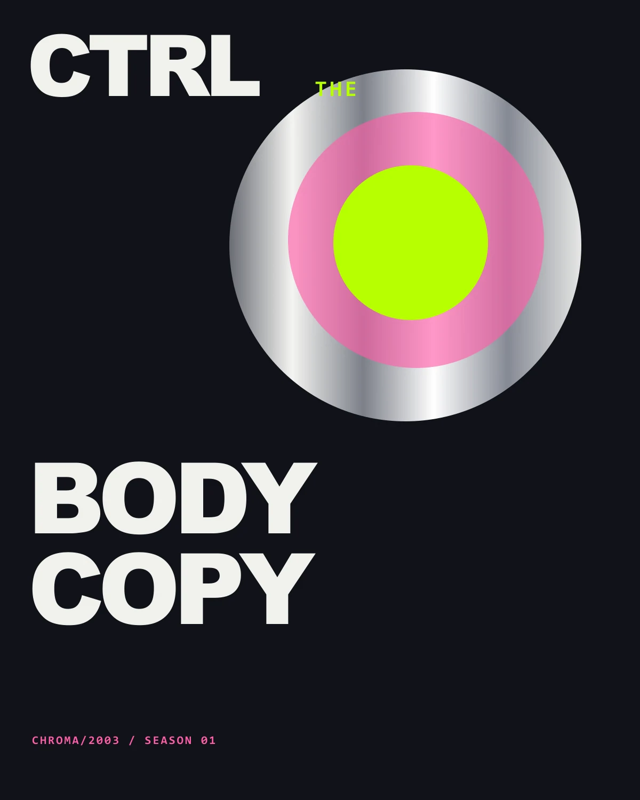
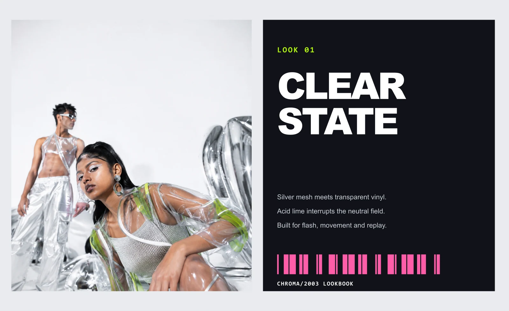
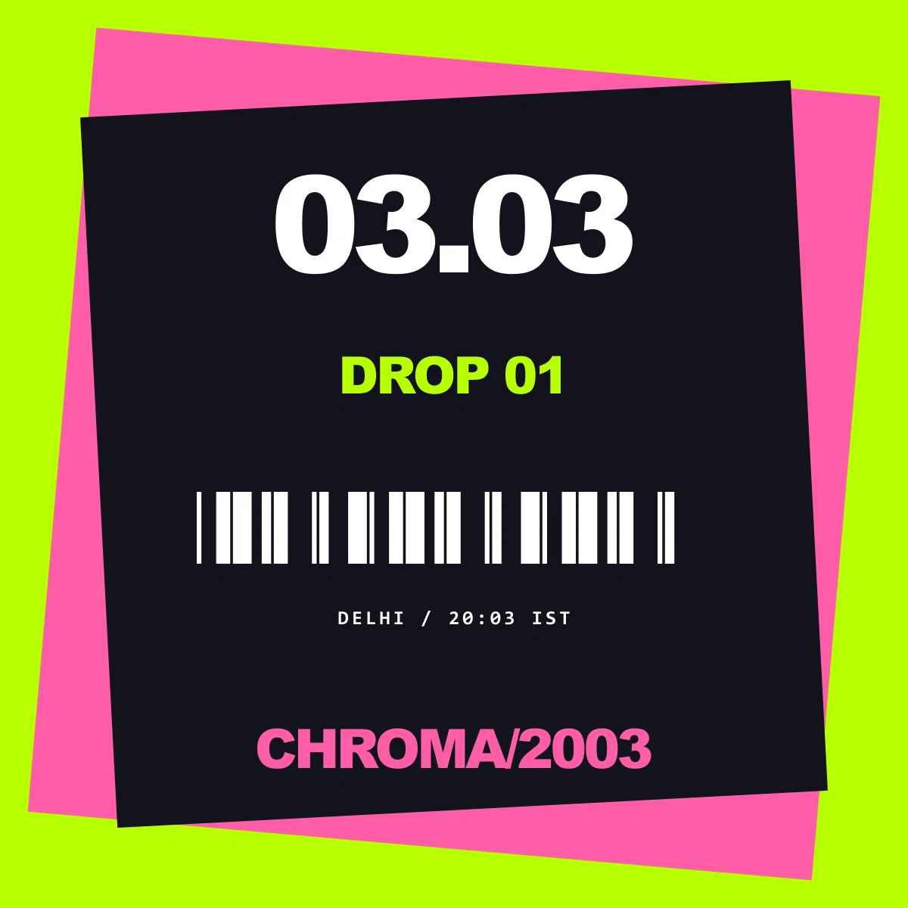
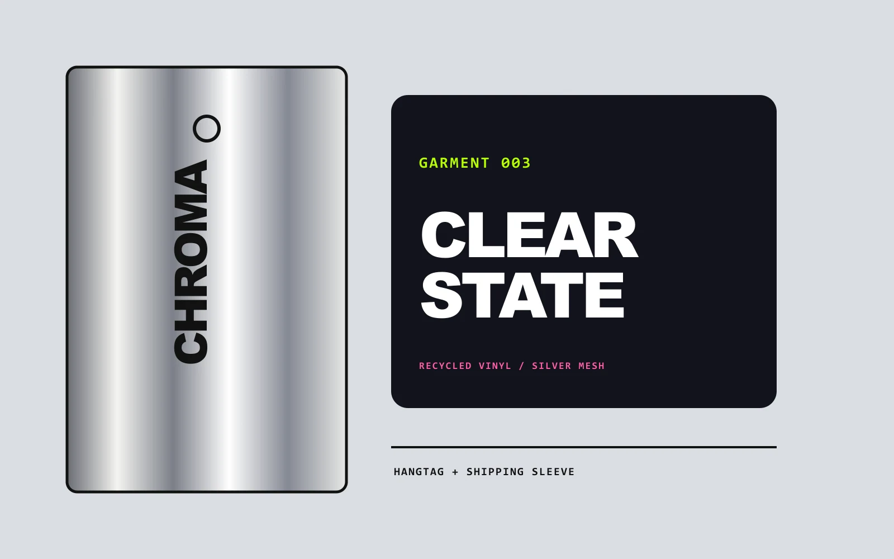

Typography
Heavy grotesk headlines with compact mono specifications.
Self-initiated fictional identity / 2026
Dress like the internet never ended.
Fashion identity / Editorial / Packaging
View 5 applications ↓
The communication problem
Audience & direction
Style-led digital natives who treat archive web culture as material rather than costume.
Chrome circles, acidic green and hot pink collide with calm black-and-white editorial pages. The tension is control versus excess.
A fashion campaign balancing hard flash, chrome surfaces and a blunt verbal proposition.

An abstract identity poster where interface language becomes fashion language.

A lookbook spread that lets material description and barcode rhythm counter the expressive image.

A high-speed release tile using rotation, code-like dates and a central barcode anchor.

A packaging application that translates the digital palette into two tactile objects.
Typography
Heavy grotesk headlines with compact mono specifications.
Colour
Chrome, signal green, hot pink, paper white and browser black.
Composition
Circular crops, stacked browser-window planes and deliberate off-register edges.
Image making
Studio fashion photography, reflective CGI-like surfaces, barcodes and vector discs.
Mixture formula
Selected alternate / Rejected direction
A busier prototype used translucent interface windows on every application. The final suite reserves that noise for launch moments so the lookbook and packaging can breathe.
AI production disclosure
Fashion photography was generated with AI. Identity, copy, type system, marks, packaging structure and final compositions were authored for this fictional label.
A new brief starts here.
@akxhiiiiii / Instagram